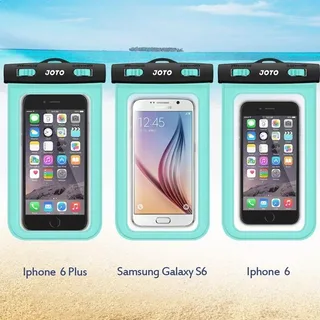
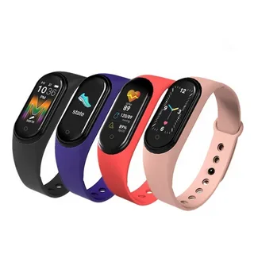

Мобильные устройства — это портативные электронные устройства, которые могут выполнять различные функции, такие как связь, интернет-серфинг, игры, работа с приложениями и другие задачи

Мобильные устройства – ряд устройств, который включает в себя смартфоны, планшеты, электронные книги, телефоны, а также количество выполняемых ими функций.

Часы, умные браслеты, умные брелки, умные очки и многие другие.